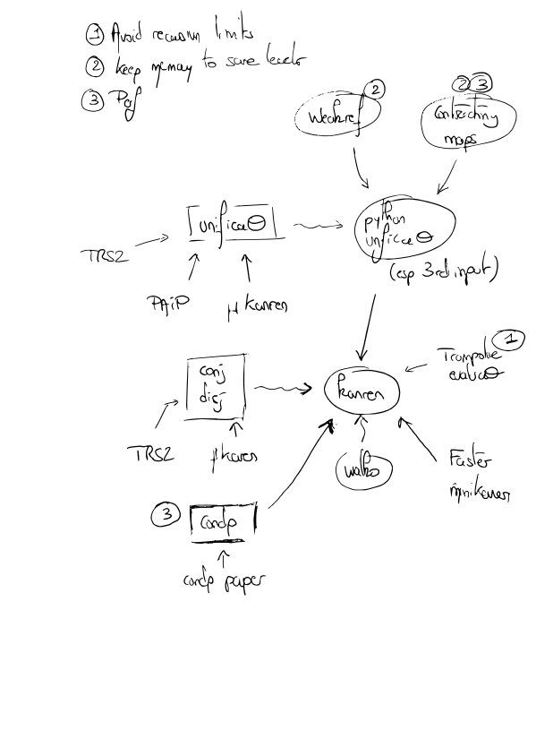

miniKanren
miniKanren is a DSL for relational programming. It can be used to declare the relations between the parameters of a problem, and let the computer find the values of the parameters that satisfy these relations. While the original implementation is in Scheme, I will be focusing in these notes on an implementation in Python.
Learn
The goal is to fully understand the python implementation. Here's a diagram that roughly summarizes what I need to understand:

TODO Unification
TODO walko
TODO condp
Projects
Term rewriting
Solving puzzles
Puzzles are a good introduction to relational programming: they have a fixed number of rules, were designed to be solved by humans.
- To solve the Zebra riddle (blog post).
- To solve Sudoku puzzles (blog post)
- The solver returns correct solution
- Hangs for simple grids. condp should help with this.
- To solve the NYT's Spelling Bee (draft)
- A Wordle solver (TODO)
- Miracle Sudoku (TODO)
- Knight's tour, a chess puzzle where we need to find a way for a knight to step on every square of a chessboard, only once (TODO).
- The N-Queen problem, which is to position N queens on a NxN chessboard such that no queen beats the others. (TODO)
Bitmaps generation
- To connect two points with a line (e.g. Brownian bridge)
- To implement a declarative version of the WaveFunctionCollapse algorithm
- I get a RecursionError for > 1000 pixels (we will need Trampoline Evaluation)
- The memory usage increases very quickly
- Performance needs to be improved
- To implement the MarkovJunior algorithm
- I need to understand walko
- Same performance concerns as with the WaveFunctionCollapse algorithm
Gardening
Gardening is typically an area where we are trying to find solutions that satisfy some constraints. We could definitely use miniKanren to plan garden if the search scaled : we can enter informations about the different plants in a database, then some information about the garden we are trying to design, and look at the combinations that come out of it.
References
- The Reasoned Schemer (2nd ed.)
- Proceedings of the 2019 Workshop on miniKanren and relational programming including towards a miniKanren with fair search strategies
- "Neural Guided Constraint Logic Programming for Program Synthesis" (paper)
- "A surprisingly competitive conditional operator" (paper)
- "\(\mu\text{Kanren}\): a functional core for relational programming$" (paper repo)
- Faster miniKanren (repo)
- Temporal logic programming with miniKanren (repo)
- cKanren: miniKanre with constraints (paper)
- "A unified approach to solving 7 programming problems" (paper)
- AskHN: Why logic programming is not widely used in the industry? (post on HN)
- Clojure's core.logic is a miniKanren implementation in Clojure.
- "A relational language - Parasat" (post) The authors starts from the logic programming language Picat and ends up suggesting something that's close to miniKanren. We also learn that William Byrd recommended the autho tries faster-miniKanren.